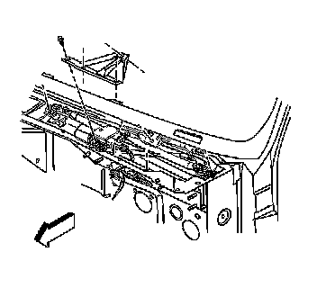
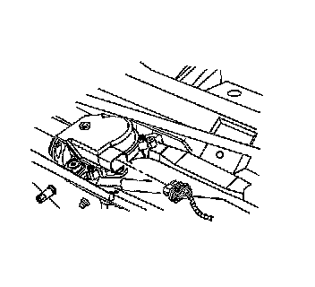
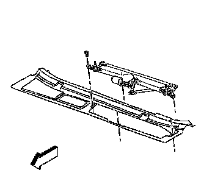
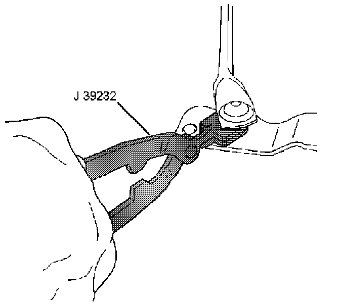
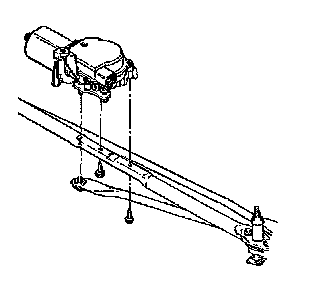
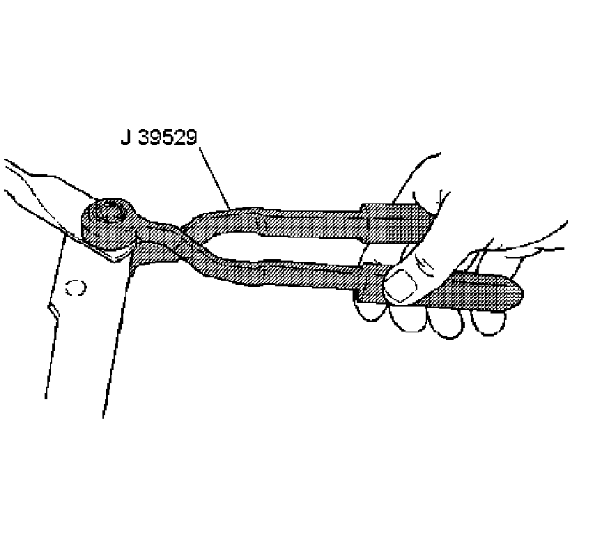

Wiper Motor Replacement
WIPER MOTOR REPLACEMENT
TOOLS REQUIRED
- J 39232 Wiper Transmission Separator
- J 39529 Wiper Transmission Installer
REMOVAL PROCEDURE

1. Remove the wiper arms.
2. Remove the air inlet grille panel.
3. Remove the 4 bolts and the reinforcement panel.

4. Disconnect the electrical connector from the wiper motor.

5. Remove the 2 bolts from the wiper transmission assembly.
6. Remove the wiper transmission assembly from the vehicle.

7. Remove the drive link from the wiper motor crank arm with the J 39232.

8. Remove the 2 bolts retaining the wiper motor.
9. Remove the wiper motor from the wiper transmission assembly.
INSTALLATION PROCEDURE
1. NOTE: Refer to Fastener Notice.
Install the wiper motor onto the wiper transmission assembly with the 2 bolts.
Tighten the 2 bolts to 8 N.m (71 lb in).

2. Install the drive link onto the wiper motor crank arm with the J 39529.
3. Install the wiper transmission assembly on the vehicle with the 2 bolts.
Tighten the 2 bolts to 9 N.m (80 lb in).
4. Connect the electrical connector to the wiper motor.
5. Install the reinforcement panel with the 4 bolts.
Tighten the 4 bolts to 9 N.m (80 lb in).
6. Install the air inlet grille panel.
7. Install the wiper arms.
8. Operate the wipers and check for proper operation.